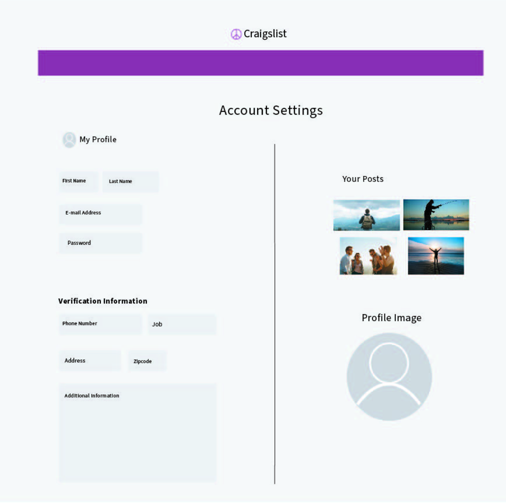

Information Architecture · Team redesign
Craigslist Redesign
A clearer path from search to seller.

My contribution
I worked with the Craft Collective team on a redesign of the local classifieds experience.
The challenge
Our team looked at how people find a listing, judge whether to trust it, and contact a seller. The presentation identified extra clicks to reach listing details, uncertainty about seller trust, and time spent waiting for replies.
How we designed it
The team used surveys, task-based think-aloud testing, and competitor analysis. We mapped the existing and proposed user flows, then developed low- and high-fidelity wireframes.


The prototype
The redesign reorganizes the homepage, condenses filters, and brings seller ratings, related listings, and contact options into the listing view. Verification and ratings are proposed features. A follow-up usability test could compare how easily users locate details and decide whether to contact a seller.